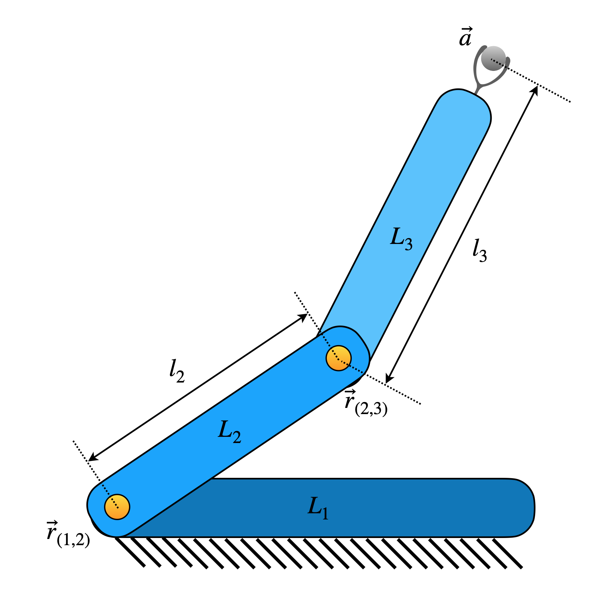

Installation and Usage
Installation
The package can be installed from PyPI by using the following command via terminal.
pip install acrod
Usage
Jacobian for robotic manipulators
2R Planar Serial Robot (as an example)
{kind=link}
The topological information of a robot is to be specified by using its robot-topology matrix, as defined here. For a planar 2R serial manipulator (as shown in the above figure), the robot topology matrix is given by
The corresponding Jacobian function can be formulated as follows.
Firstly, the required functions are imported as shown below.
from acrod.jacobian import Jacobian
from numpy import array
The robot-topology matrix for 3R planar serial manipulator is defined and jacobian information is processed via the imported jacobian class as follows.
M = array(
[[9, 1, 0],
[1, 9, 1],
[0, 1, 9]]
)
jac = Jacobian(M, robot_type = 'planar')
Jacobian function is generated as shown below.
jacobian_function = jac.get_jacobian_function()
In the process of generating the above jacobian function, other
attributes of the jacobian object also are updated. Symbolic Jacobian
matrices can be extracted from the attributes. Since this is a serial
robot, the matrix \(J_a\) itself would be the Jacobian matrix of the
manipulator. The matrix \(J_a\) is extracted from Ja attribute
of the jacobian object as follows.
symbolic_jacobian = jac.Ja
symbolic_jacobian
In an ipynb file of JupyterLab, the above code would produce the following output.
The above Jacobian is based on the notations defined and described here.
Active joint velocities, in the corresponding order, can be viewed by running the following lines.
active_joint_velocities = jac.active_joint_velocities_symbolic
active_joint_velocities
In an ipynb file of JupyterLab, the above code would produce the following output.
Robot dimensional parameters can be viewed by running the below line.
robot_dimensional_parameters = jac.parameters_symbolic
robot_dimensional_parameters
In an ipynb file of JupyterLab, the above code would produce the following output.
Robot end-effector parameters can be viewed by running the below line.
robot_endeffector_parameters = jac.endeffector_variables_symbolic
robot_endeffector_parameters
In an ipynb file of JupyterLab, the above code would produce the following output.
Sample computation of Jacobian for the configuration corresponding to the parameters shown below:
End-effector point: \(\textbf{a}=\hat{i}+2\hat{j}\)
Locations of joints: \(\textbf{r}_{(1,2)}=3\hat{i}+4\hat{j}\) and \(\textbf{r}_{(2,3)}=5\hat{i}+6\hat{j}\)
For the given set of dimensional parameters of the robot, the numerical
Jacobian can be computed as follows. Firstly, we need to gather the
configuration parameters in Python list format, in a particular order.
The robot dimensional parameters from jac.parameters_symbolic are
found (as shown earlier) to be in the order of \(r_{(1,2)x}\),
\(r_{(1,2)y}\), \(r_{(2,3)x}\) and \(r_{(2,3)y}\). Hence the
configuration parameters are to be supplied in the same order, as a
list. Thus, the computation can be performed as shown below.
end_effector_point = [1,2]
configuration_parameters = [3,4,5,6]
jacobian_at_the_given_configuration = jacobian_function(end_effector_point, configuration_parameters)
jacobian_at_the_given_configuration
The output produced by running the above code, is shown below.
array([[ 2, 4],
[-2, -4],
[ 1, 1]])
Mathematical concepts behind formulating the Jacobian can be found here.
Dimensional Synthesis
For dimensional synthesis, at least a performance parameter is required. One commonly used performance parameter in dimensional synthesis is the condition number. From the above Jacobian function, the condition number can be found by computing the ratio of maximum singular value and minimum singular value. This condition number has the bounds \((1,\infty)\). When the condition number is 1, that signifies the best performance in the context of condition number. The computation of condition number from a given Jacobian can be achieved by the code shown below:
from numpy.linalg import svd
def condition_number_func(jacobian_matrix):
_, singular_values, _ = svd(jacobian_matrix)
condition_number = singular_values.max()/singular_values.min()
return condition_number
For reference if we take the joint at the fixed link to be at the origin, the dimensional synthesis for optimal performance around the end-effector point \(\textbf{a}=\hat{i}+2\hat{j}\) can be performed by the code shown below:
from scipy.optimize import minimize
from numpy import hstack, ones
end_effector_point = [1,2]
base_reference_point = [0,0]
r12 = base_reference_point
jac_fun = lambda y: jacobian_function(end_effector_point, hstack((base_reference_point,y)))
condition_number = lambda z: condition_number_func(jac_fun(z))
initial_guess = ones(len(jac.parameters)-len(base_reference_point))
res = minimize(condition_number, initial_guess)
r23 = res.x
The link lengths \(l_2\) and \(l_3\) are given by \(l_2 = \lVert \textbf{r}_{12}-\textbf{r}_{23} \rVert\) and \(l_3 = \lVert\textbf{r}_{23}-\textbf{a}\rVert\). By using the code below, the link lengths of 2R robot can be computed.
from numpy.linalg import norm
l1 = norm(r23-r12)
l2 = norm(r23-end_effector_point)
print(l1,l2,res.fun)
Output:
3.4641016153289317 2.236067976155377 1.0000000007904777
The above output shows that for \(l_1=3.464\) and \(l_2=2.236\), the robot has the condition number approximately equal to \(1.0\), which signifies optimal performance.